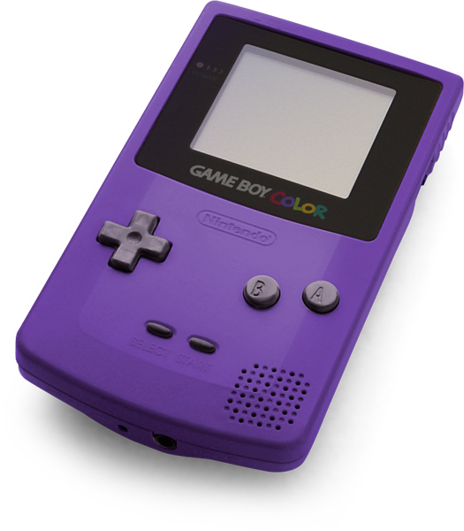
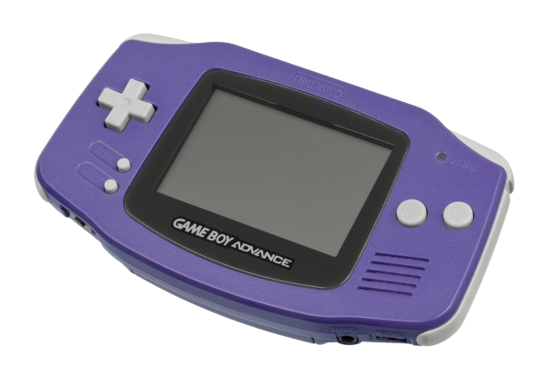
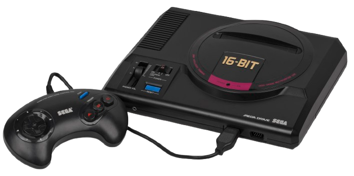

1998

Game Boy Color (GBC)
O sucessor do lendário Game Boy trouxe cores vibrantes para a palma da mão, mantendo a incrível retrocompatibilidade que a Nintendo consagrou.
🎮 Jogos Marcantes:
- Pokémon Gold & Silver
- The Legend of Zelda: Oracle of Ages
- Super Mario Bros. Deluxe
1996

Nintendo 64
A revolução dos gráficos 3D da Nintendo. O console que moldou a indústria com mundos tridimensionais abertos e a icônica alavanca analógica.
🎮 Jogos Marcantes:
- Super Mario 64
- The Legend of Zelda: Ocarina of Time
- Super Smash Bros
2001

Game Boy Advance (GBA)
Conhecido carinhosamente como o "Super Nintendo de bolso". Com seu poder de 32 bits, o GBA refinou a arte dos sprites bidimensionais.
🎮 Jogos Marcantes:
- Pokémon Emerald
- Metroid Fusion
- Castlevania: Aria of Sorrow
1994

Sega Saturn
O poderoso monstro de 32 bits da SEGA. Embora complexo para programar em 3D, ele se tornou o rei supremo absoluto dos jogos de luta e fliperamas em 2D.
🎮 Jogos Marcantes:
- Nights into Dreams...
- Sega Rally Championship
- Virtua Fighter 2
1988

Mega Drive (Genesis)
O console que desafiou a Nintendo nos anos 90 com muita atitude, velocidade "Blast Processing" e a estreia do ouriço azul mais rápido do mundo.
🎮 Jogos Marcantes:
- Sonic the Hedgehog 2
- Streets of Rage 2
- Phantasy Star IV